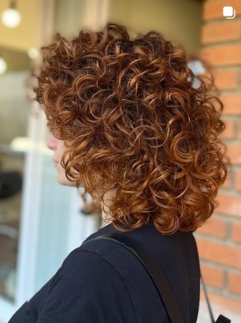
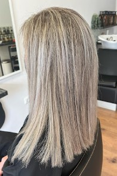
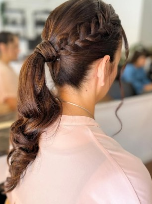
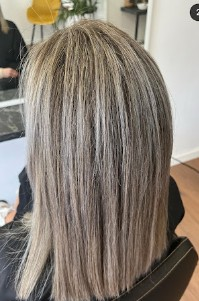
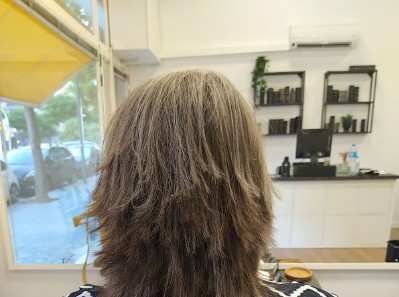

Diagnóstico antes de todo
Antes de empezar, miramos juntas tu cabello y lo que quieres conseguir. Sin compromiso.
Bio peluquería de autor · Tarragona
Te escuchamos, te asesoramos y después creamos. Cortes y color a tu medida, con productos naturales que cuidan tu pelo de verdad.

Nosotras
Esta peluquería es el proyecto de Marisa Iglesias: un salón propio para trabajar como siempre creyó que había que hacerlo. Con tiempo, escuchando y sin prometer lo que tu pelo no puede dar.
Aquí no hay cadena ni prisas. Somos dos, Marisa y Esther, que conocemos tu cabello, recordamos lo que te hicimos la última vez y te decimos la verdad, aunque sea "hoy mejor no decolorar".
"Bio" porque trabajamos con productos naturales. Es lo que más valoráis, y es que un buen resultado no debería costarle la salud a tu pelo.
— Marisa Iglesias
Antes de empezar, miramos juntas tu cabello y lo que quieres conseguir. Sin compromiso.
Cursos de color, corte y tratamientos cada temporada. Lo nuevo, solo si funciona.
Trabajamos con productos naturales y respetuosos con tu pelo y tu cuero cabelludo.
Música suave, un café y nadie mirando el reloj. Este rato es tuyo.
Quién te atiende

Fundadora · Peluquera de autor
“Elegí la mejor profesión: me hacéis feliz cada día.”
Años de oficio y una forma de trabajar muy simple: dedicarte el tiempo que necesitas. Por eso tantas clientas llegan “después de muchos años de malas experiencias” y se quedan.

Peluquera
“Que salgas por la puerta sintiéndote tú.”
Trabaja codo con codo con Marisa con la misma filosofía: escuchar primero, cuidar siempre y productos naturales en cada servicio.
Servicios
Todos los servicios incluyen diagnóstico, lavado con producto adaptado a tu pelo y consejos para mantener el resultado en casa.
Corte pensado para tu tipo de pelo y tu rutina. Incluye lavado y secado.
Tijera o máquina, con lavado y acabado con producto de fijación.
Hasta 12 años. Con calma, paciencia y sin lágrimas.
Brushing liso, ondas o volumen. Ideal antes de una cita especial.
Cobertura de canas o retoque de color, sin amoniaco.
Clásicas o con papel, para dar luz y dimensión a tu color.
Aclarado a mano alzada, natural y de crecimiento suave. Pocas visitas al año.
Microreflejos muy finos para un rubio luminoso y nada marcado.
Neutraliza amarillos o naranjas y devuelve el brillo al rubio.
¿Un color que no salió como esperabas? Lo valoramos y lo arreglamos por fases.
Mascarilla intensiva con calor para pelo seco o encrespado.
Repara los enlaces internos del cabello dañado por decoloración o calor.
Pelo liso y sin encrespamiento durante 3–4 meses. Fórmula sin formol.
Ampollas y masaje estimulante. Recomendado en bono de 6 sesiones.
Exfoliación y equilibrio para grasa, caspa o sensibilidad. El pelo sano empieza aquí.
Ondas, semirrecogido o acabado pulido para cenas, graduaciones y fiestas.
Moño bajo, trenzas o recogido pulido que aguanta toda la noche.
Prueba previa, peinado del día y posibilidad de desplazamiento.
Peinado para madrinas, damas e invitadas. También para grupos.
¿No sabes qué servicio necesitas? Pregúntanos y te asesoramos sin compromiso.
Galería
Fotos reales de clientas del salón. Sin filtros ni pelucas de exposición.





Opiniones
★★★★★“Después de muchos años de malas experiencias, me puse en sus manos, y solo tengo que decir: ¡VOLVERÉ! Encantada con el trato, el servicio y lo más importante, el resultado.”
★★★★★“Una mención especial por usar los productos naturales.”
★★★★★“Muy buena atención y buen corte de pelo. Muy buen trato y dedicación.”
Respuesta de Marisa: “Mil gracias por tu confianza en mí. Estas reseñas me ayudan, sé que elegí la mejor profesión. ¡Me hacéis feliz! ❤️”
Cuéntanos qué quieres y te asesoramos sin compromiso antes de empezar.
Contacto
| Martes a viernes | 9:00 a 13:00 / 15:00 a 19:00 |
| Sábado,Domingo y lunes | Cerrado |
Reservar cita
Rellena el formulario y se abrirá WhatsApp con tu solicitud lista para enviar. Te confirmamos la hora lo antes posible.
¿Prefieres llamar? 629 77 67 31